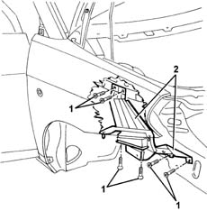

7210A30 R.R. FRONT WING MOUNTING BRACKET
- Path
- Procedures > 72 PANELS AND FRAME > 7210 REMOVING REFITTING > 7210A structural elements (front part) > 7210A30 R.R. FRONT WING MOUNTING BRACKET
- Kind
- repair procedure (removal / refitting; the operation number is the code)
- Applies to
- all engines; all production periods
- Interactive page
- https://sloeber94.github.io/elrnDB-lYpsln/en/#/2429715
Applies to: all engines; all production periods
 Removing
Removing
 Refitting
RefittingLift the bonnet lid.
1. Undo the bracket retaining bolts.
2. Remove the bracket.

Applies to: all engines; all production periods
Refitting
RemovingCheck that the bracket is not damaged.
Position the bracket and secure with its bolts.
Check bracket alignment.